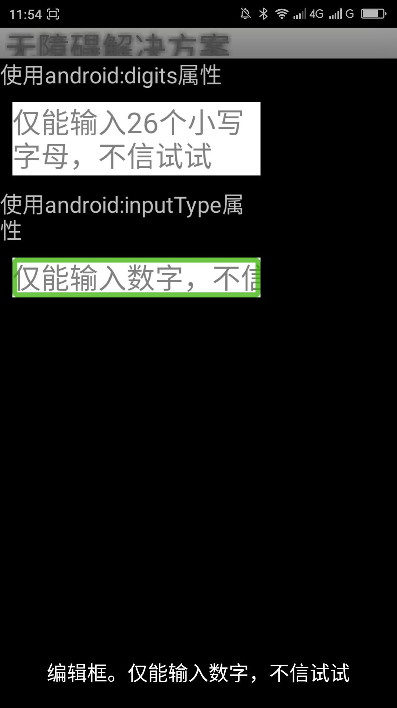
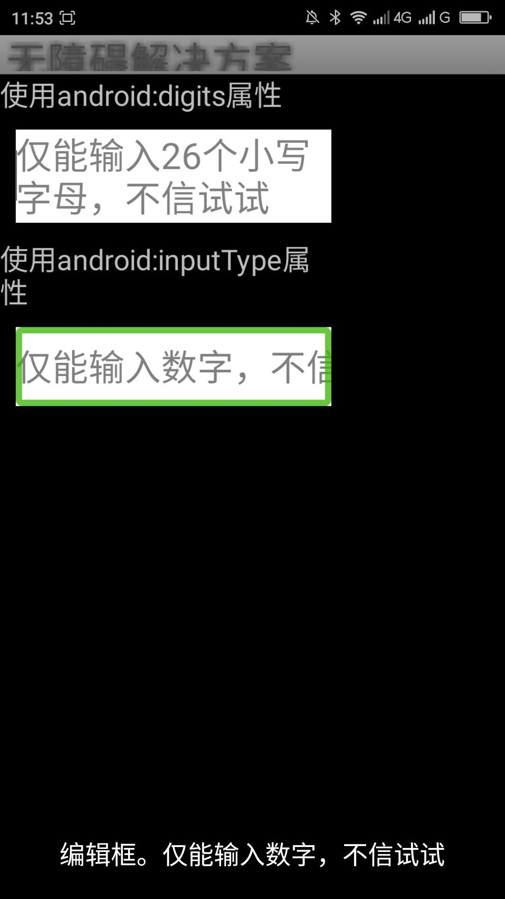

返回
当用户开启屏幕阅读器的时候用滑动或触摸浏览到EditText（编辑框）单指双击激活此编辑框，由于编辑框的大小不足够致使编辑框无法激活，无法弹出虚拟键盘。
可触控制区域大小：官方推荐，用户可选择或者操作区域最小长度和宽度为48dp大小。经此代码测试第二个编辑框的高度最小设置为42dp的时候就可以点击，高度设置影响不是很明显。但是还是推荐吧控件的大小设置为宽度和高度至少48dp。
|  |  |
| 优化前，焦点编辑框不能唤出键盘 | 优化后，焦点编辑框可以唤出键盘 |
其他控件也会存在此问题，希望在设置控件的大小的时候尽量遵循官方推荐的宽度和高度不小于48dp。